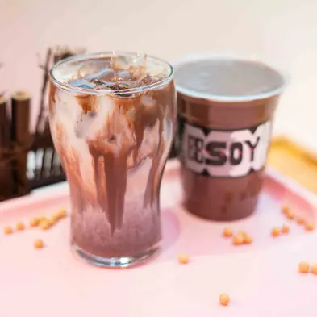

Most soymilk is an afterthought — thin, oversweetened, made to be forgotten. EESOY starts from whole organic soybeans, hand-brewed the same morning they're served, and builds a menu of drinks and desserts around how good that base actually tastes.
Read our story
Three ways into the menu, depending on what you're after.
Our house soymilk in five brews — Pure, Autumn, Spring, Oak and Wave — for people who want the bean to speak for itself.
Caffè, chocolate, sesame, matcha and hojicha, infused into the same house base.
Silky soy pudding and soy gelato, in six house flavours with a DIY topping bar.



11:00 AM – 10:30 PM, seven days a week.